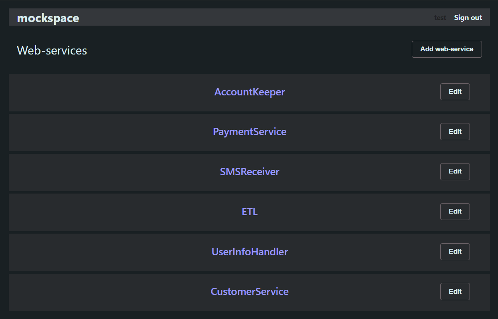

Add the necessary web-services

Fill a web-services with methods you need
Configure response parameters
Installation
To install mockspace, run this command in your terminal:
pip install mockspace
Usage
To start mockspace, run the following command in your command line:
mockspace
and go to http://localhost:8080/.
Open source
mockspace is free and open source
software. The source code is available on GitHub.